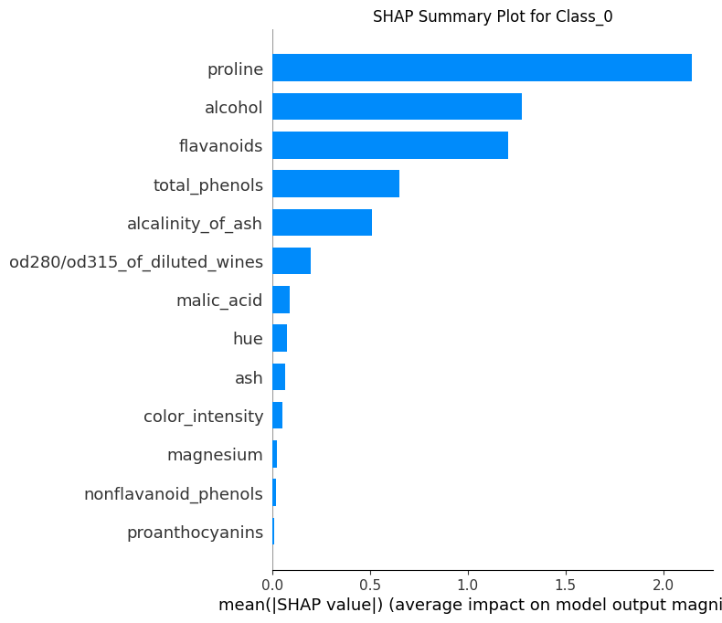
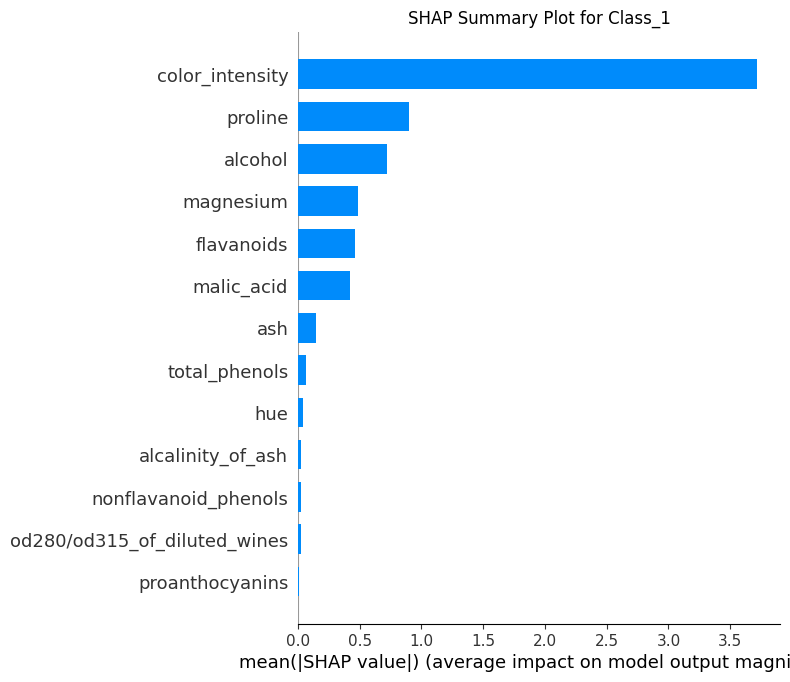
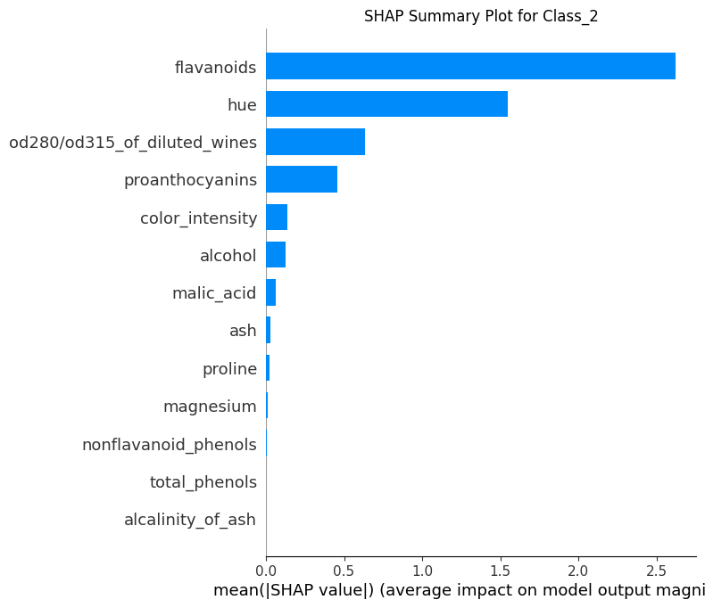

import numpy as np
import pandas as pd
import shap
import matplotlib.pyplot as plt
import os
class ShapExplain:
def __init__(self, model):
if hasattr(model, 'classes_') and hasattr(model, 'feature_name_'):
self.model = model
self.raw_scores = None
self.proba_scores = None
self.labels = None
self.shap_values = None
self.shap_contributions = None
# Initialize class attributes from the model
self.num_classes = len(model.classes_)
self.num_features = len(model.feature_name_)
self.feature_names = model.feature_name_ + ["Bias"]
else:
raise ValueError("The provided model does not have the required attributes 'classes_' or 'feature_name_'.")
def predict_raw_scores(self, X):
if hasattr(self.model, 'predict'):
self.raw_scores = self.model.predict(X, raw_score=True)
return self.raw_scores
else:
raise AttributeError("The model does not support raw score predictions.")
def predict_proba(self, X):
if hasattr(self.model, 'predict_proba'):
self.proba_scores = self.model.predict_proba(X)
return self.proba_scores
else:
raise AttributeError("The model does not support probability predictions.")
def predict_labels(self, X):
self.predict_proba(X) # Ensure probabilities are always calculated
self.labels = [np.argmax(score) for score in self.proba_scores]
return self.labels
def calculate_shap_values(self, X):
if hasattr(self.model, 'predict'):
self.shap_values = self.model.predict(X, pred_contrib=True)
return self.shap_values
else:
raise AttributeError("The model does not support SHAP value predictions.")
def split_shap_values(self):
if self.shap_values is None:
raise ValueError("SHAP values have not been calculated. Call calculate_shap_values first.")
shap_contributions = {}
for class_idx in range(self.num_classes):
start_idx = class_idx * (self.num_features + 1)
end_idx = start_idx + (self.num_features + 1)
shap_contributions[f"Class_{class_idx}"] = pd.DataFrame(
self.shap_values[:, start_idx:end_idx], columns=self.feature_names
)
self.shap_contributions = shap_contributions
return self.shap_contributions
def calculate_mean_absolute_shap_contributions(self):
"""
Calculate the mean absolute SHAP contributions for each feature and class.
Returns:
pd.DataFrame: A DataFrame where rows represent features, columns represent classes,
and values are the mean absolute SHAP contributions.
"""
if self.shap_contributions is None:
raise ValueError("SHAP contributions have not been split. Call split_shap_values first.")
mean_abs_contributions = {}
for class_name, shap_values_df in self.shap_contributions.items():
# Exclude the "Bias" column and calculate the mean absolute value
mean_abs_contributions[class_name] = shap_values_df.iloc[:, :-1].abs().mean(axis=0)
# Combine into a DataFrame for easier interpretation
mean_abs_df = pd.DataFrame(mean_abs_contributions)
mean_abs_df.index.name = "Feature"
return mean_abs_df
def plot_shap_summary(self, plot_type='bar', output_dir=None, title_prefix=None):
# Ensure output directory exists if specified
if output_dir and not os.path.exists(output_dir):
os.makedirs(output_dir)
for class_name, shap_values_df in self.shap_contributions.items():
shap_values = shap_values_df.iloc[:, :-1].values
feature_names = shap_values_df.columns[:-1] # Exclude 'Bias' from feature names
plt.figure()
shap.summary_plot(shap_values, feature_names=feature_names, plot_type=plot_type, show=False)
title = f'SHAP Summary Plot for {class_name}'
if title_prefix:
title = f'{title_prefix} {title}'
plt.title(title)
if output_dir:
filename = f'{title_prefix}_{class_name}_shap_summary.png' if title_prefix else f'{class_name}_shap_summary.png'
plt.savefig(os.path.join(output_dir, filename), bbox_inches='tight')
plt.close()
else:
plt.show()LightGBM Predict Contrib for Multi-Class Classification
Class ShapExplain
import numpy as np
import pandas as pd
import shap
import matplotlib.pyplot as plt
import os
class ShapExplain:
def __init__(self, model):
if hasattr(model, 'classes_') and hasattr(model, 'feature_name_'):
self.model = model
self.raw_scores = None
self.proba_scores = None
self.labels = None
self.shap_values = None
self.shap_contributions = None
# Initialize class attributes from the model
self.num_classes = len(model.classes_)
self.num_features = len(model.feature_name_)
self.feature_names = model.feature_name_ + ["Bias"]
else:
raise ValueError("The provided model does not have the required attributes 'classes_' or 'feature_name_'.")
def predict_raw_scores(self, X):
if hasattr(self.model, 'predict'):
self.raw_scores = self.model.predict(X, raw_score=True)
return self.raw_scores
else:
raise AttributeError("The model does not support raw score predictions.")
def predict_proba(self, X):
if hasattr(self.model, 'predict_proba'):
self.proba_scores = self.model.predict_proba(X)
return self.proba_scores
else:
raise AttributeError("The model does not support probability predictions.")
def predict_labels(self, X):
self.predict_proba(X) # Ensure probabilities are always calculated
self.labels = [np.argmax(score) for score in self.proba_scores]
return self.labels
def calculate_shap_values(self, X):
if hasattr(self.model, 'predict'):
self.shap_values = self.model.predict(X, pred_contrib=True)
return self.shap_values
else:
raise AttributeError("The model does not support SHAP value predictions.")
def split_shap_values(self):
if self.shap_values is None:
raise ValueError("SHAP values have not been calculated. Call calculate_shap_values first.")
shap_contributions = {}
for class_idx in range(self.num_classes):
start_idx = class_idx * (self.num_features + 1)
end_idx = start_idx + (self.num_features + 1)
shap_contributions[f"Class_{class_idx}"] = pd.DataFrame(
self.shap_values[:, start_idx:end_idx], columns=self.feature_names
)
self.shap_contributions = shap_contributions
return self.shap_contributions
def calculate_mean_absolute_shap_contributions(self):
"""
Calculate the mean absolute SHAP contributions for each feature and class.
Returns:
pd.DataFrame: A DataFrame where rows represent features, columns represent classes,
and values are the mean absolute SHAP contributions.
"""
if self.shap_contributions is None:
raise ValueError("SHAP contributions have not been split. Call split_shap_values first.")
mean_abs_contributions = {}
for class_name, shap_values_df in self.shap_contributions.items():
# Exclude the "Bias" column and calculate the mean absolute value
mean_abs_contributions[class_name] = shap_values_df.iloc[:, :-1].abs().mean(axis=0)
# Combine into a DataFrame for easier interpretation
mean_abs_df = pd.DataFrame(mean_abs_contributions)
mean_abs_df.index.name = "Feature"
return mean_abs_df
def plot_shap_summary(self, plot_type='bar', output_dir=None, title_prefix=None):
# Ensure output directory exists if specified
if output_dir and not os.path.exists(output_dir):
os.makedirs(output_dir)
for class_name, shap_values_df in self.shap_contributions.items():
shap_values = shap_values_df.iloc[:, :-1].values
feature_names = shap_values_df.columns[:-1] # Exclude 'Bias' from feature names
plt.figure()
shap.summary_plot(shap_values, feature_names=feature_names, plot_type=plot_type, show=False)
title = f'SHAP Summary Plot for {class_name}'
if title_prefix:
title = f'{title_prefix} {title}'
plt.title(title)
if output_dir:
filename = f'{title_prefix}_{class_name}_shap_summary.png' if title_prefix else f'{class_name}_shap_summary.png'
plt.savefig(os.path.join(output_dir, filename), bbox_inches='tight')
plt.close()
else:
plt.show()
# Example usage:
# Assuming `model` and `X_test` are defined, and the model is already fitted with attributes like classes_ and feature_names_.
# shap_explain = ShapExplain(model)
# raw_scores = shap_explain.predict_raw_scores(X_test)
# proba_scores = shap_explain.predict_proba(X_test)
# labels = shap_explain.predict_labels(X_test)
# shap_values = shap_explain.calculate_shap_values(X_test)
# shap_contributions = shap_explain.split_shap_values()
# # Create a Pandas Excel writer using openpyxl as the engine
# with pd.ExcelWriter('shap_explain_output.xlsx', engine='openpyxl') as writer:
# # Convert raw_scores and labels to DataFrames and write to Excel
# pd.DataFrame(raw_scores).to_excel(writer, sheet_name='Raw Scores')
# pd.DataFrame(proba_scores, columns=[f"Class_{i}" for i in range(shap_explain.num_classes)]).to_excel(writer, sheet_name='Probabilities')
# pd.DataFrame(labels, columns=['Predicted Labels']).to_excel(writer, sheet_name='Labels')
# # Write each class's SHAP contributions to a separate sheet
# for class_name, df in shap_contributions.items():
# df.to_excel(writer, sheet_name=f'SHAP Values {class_name}')Class ShapExplain được thiết kế để hỗ trợ việc giải thích các mô hình Machine Learning sử dụng SHAP (SHapley Additive exPlanations). Class này giúp người dùng: 1. Tính toán các giá trị SHAP cho mô hình. 2. Tách riêng các đóng góp SHAP theo lớp (class). 3. Tạo các biểu đồ SHAP để minh họa ảnh hưởng của từng đặc trưng đến dự đoán của mô hình.
Class yêu cầu mô hình đầu vào phải có hai thuộc tính quan trọng: - classes_: Danh sách các lớp trong bài toán phân loại. - feature_name_: Danh sách các đặc trưng được sử dụng trong mô hình.
Các phương thức chính
__init__:- Khởi tạo class với mô hình và kiểm tra mô hình có các thuộc tính cần thiết (
classes_,feature_name_). - Gán các giá trị ban đầu (số lượng lớp, số lượng đặc trưng, v.v.).
- Khởi tạo class với mô hình và kiểm tra mô hình có các thuộc tính cần thiết (
predict_raw_scores:- Dự đoán điểm số “thô” (raw scores) từ mô hình.
predict_proba:- Dự đoán xác suất của từng lớp.
predict_labels:- Dự đoán nhãn (label) bằng cách chọn lớp có xác suất cao nhất.
calculate_shap_values:- Tính giá trị SHAP bằng cách sử dụng phương pháp
predictvớipred_contrib=True.
- Tính giá trị SHAP bằng cách sử dụng phương pháp
split_shap_values:- Phân tách giá trị SHAP theo từng lớp (class) thành các DataFrame riêng biệt.
calculate_mean_absolute_shap_contributions:- Tính giá trị trung bình tuyệt đối của các đóng góp SHAP (mean absolute SHAP contributions) để hiểu đặc trưng nào quan trọng nhất.
plot_shap_summary:- Tạo biểu đồ SHAP (summary plot) cho từng lớp, lưu vào thư mục hoặc hiển thị trực tiếp.
# LightGBM Predict Contrib for Multi-Class Classification
# Import necessary libraries
import numpy as np
import pandas as pd
import lightgbm as lgb
import shap
import matplotlib.pyplot as plt
from sklearn.datasets import load_wine
from sklearn.model_selection import train_test_split
from sklearn.metrics import classification_report
# Step 1: Load Dataset
wine = load_wine()
X = pd.DataFrame(wine.data, columns=wine.feature_names)
y = wine.target
# Step 2: Split Dataset
X_train, X_test, y_train, y_test = train_test_split(X, y, test_size=0.3, random_state=42)
# Step 3: Train LightGBM Model
model = lgb.LGBMClassifier(verbosity = -1)
model.fit(X_train, y_train)
LGBMClassifier(verbosity=-1)In a Jupyter environment, please rerun this cell to show the HTML representation or trust the notebook.
On GitHub, the HTML representation is unable to render, please try loading this page with nbviewer.org.
LGBMClassifier(verbosity=-1)
# Example usage:
shap_explain = ShapExplain(model)
raw_scores = shap_explain.predict_raw_scores(X_test)
proba_scores = shap_explain.predict_proba(X_test)
labels = shap_explain.predict_labels(X_test)
shap_values = shap_explain.calculate_shap_values(X_test)
shap_contributions = shap_explain.split_shap_values()
mean_abs_contributions = shap_explain.calculate_mean_absolute_shap_contributions()shap_explain.plot_shap_summary()

